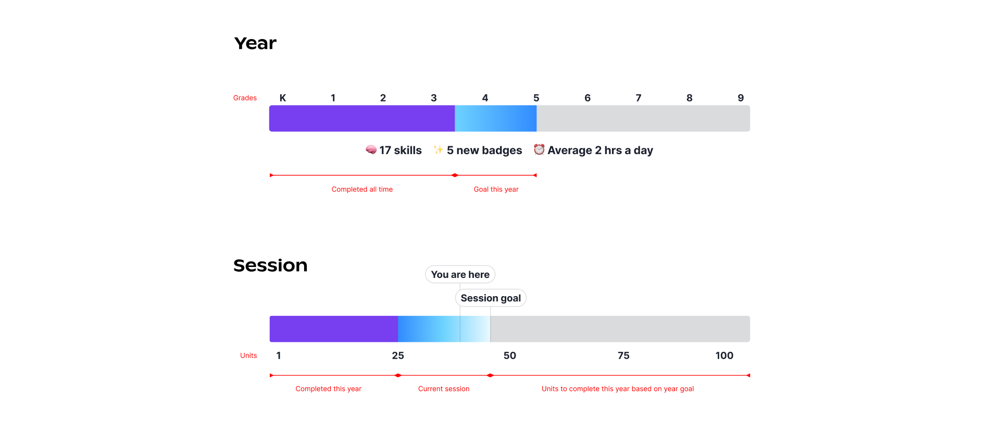

Primer’s bet is self-paced learning for all students. To accompany that objective, we created a goal setting experience for students to find their own motivation and vision for their academics. This project allows 300+ students at Primer to create their own personal learning experience for the year!
Background
Primer’s mission is to “free the next generation of kids to be more ambitious, more creative, and to think for themselves.”
Primer is “building a new education system that takes kids seriously.”
Primer is building a new education system that takes kids seriously.
Primer started microschools (small schools of about 15 students) in Florida and Arizona in 2022.
Each school is a mixed age range of either K-2 or 3-8.
Problem
In Primer’s first year, our model was having subject classes by typical grade levels.
We didn’t see a ton of improvement in MAP scores and students weren’t invested in their learning.
In fact, 96% of Primer students were behind grade level in math and literacy.
This wasn’t necessarily an outcome of our curriculum, but the neighborhoods we served.
The education system in these neighborhoods weren’t supporting students that were behind.
96% of Primer students were behind grade level in math and literacy.
Research
In the fall, our team went to visit schools and interview teachers and students. From these interviews and observations, I learned that our current model wasn’t supporting students well enough.
Students weren’t engaged in their learning, but they did love their teachers
Many students were struggling to keep up in their grade level
After the school visits, the design team created archetypes to how to support each type of student.
This allowed us to understand our students needs better and to stay aligned on a vision for our students.
Featuring icons from some of our favorite movies <3.
Hypothesis
Self-paced learning was always on our horizon. Our team wanted students to take ownership over their learning because we believed that’s what it meant to take kids seriously and to allow them to find their own interests. After many discussions as a team, we decided to go full force into self-paced learning.
Self-paced learning will help students get on grade level and engage students in their academics.
We introduced various pilots throughout the year to small groups of students to test our theory. This bolstered our hypothesis and increased our confidence in this model.
What is self-paced learning?
Self-paced learning is a type of instruction where students learn at their own pace. At Primer, each student has a laptop and accounts on Primer and two learning platforms (Edmentum for math and Lexia for literacy).
Key benefits:
Learning at your own pace
Ownership and agency over learning
Personalized feedback
Our model looked a little like this:
Students have different blocks throughout the day. All of the subject classes are done virtually and self-paced.
Edmentum and Lexia are the platforms students use for their self-paced math and literacy.
What does this all mean for design?
This is all just curriculum, right? Well, we believed technology could support our students in their self-paced learning.
Our goal with product was to motivate students to take ownership over their learning.
I took this goal and started breaking it up into ideas of progress and goal setting.
A quick note on the design system
Before we dive into the designs, I wanted to set some context on how visual design for children’s digital products can look quite different than the digital products we are used to.
We need to be very explicit about guiding attention, so big and bold colors are used more liberally. Our brand is positioned so we take kids seriously – no traditional children illustrations, but elements that inspire.
This was a big project, and we used many components from our internal design system, much of which I have contributed to and defined for microschools.
See the full design system case study here.
Student agency
We wanted our students to take ownership over their learning. Our education team piloted goal setting with a few students and saw that it engaged students more in their academics. So, we brought it into the product.
Students will set goals for the year and then small ones throughout the year for math, literacy, reading, and interest-based courses. This connects students with their learning and puts them in the driver seat.
How I designed progress
In the goal setting experience, there are many progress bars. They’re not just progress bars though. I believe visualizing progress helps students (1) understand where they are in their academic goals and (2) be proud of all that they’ve accomplished. I iterated a lot on this notion of progress and landed on the humble progress bar.
I started with many explorations on visualizing progress. I explored ideas of a map, being able to choose your own path, and explored checklist styles.
So why the progress bar? Why didn’t any of these other options work?
The progress indicator needed three things:
Convey where you are and where you’re going
Share a sense of accomplishment and moving forward
Simplicity for kids
The progress bar does exactly those three things. It’s a common visual so it’s easy to understand. It has one forward motion. It shows you where you are and your goal.

The progress bar for year and session goal setting. The scale for year is on a grade scale as it was the best measurement for students and families to understand where you are in your academic journey. The sessions are set up by units since sessions are only 7 weeks.
Motivating students
Teachers across the world use a variety of methods to motivate students. One of our teachers gives out monopoly money based on behavior, which you can use to get various prizes. Incentives are often helpful in creating good habits! I wanted to make some fun incentives for students on the product.
Some explorations.
Streaks are a very popular concept. We tested it a few times when Primer’s product was clubs and it definitely engaged kids. I wanted to try it for our students too! The students have daily goals based on their overall academic goals. If they hit their daily goal, they’ll receive an emoji on their calendar. ✨
The streak design I went with! Unlock fun emojis per day.
Edmentum and Lexia is structured around levels. I created badges for each level completed. I designed and drew each one – it was super fun! These badges are also helpful as a way to see progress and see everything you learned.
Another feature we implemented is interests. We ask students about their interests when they set their year goals. From there, we used GPT-4 to figure out the connection between their interests and math and literacy skills.
The Primer experience
Learnings & Reflection
Goal setting was very successful and easy to use. Students started to use the language.
However, students started over-indexing on Edmentum & Lexia and didn’t take the time to really absorb and learn the content.
Students were just trying to keep the streak! Not the best outcome and, if I were still at Primer, I’d want to iterate on this experience and understand student motivations better.
Goal setting was very successful and easy to use. Students started to use the language.
In terms of concrete ways to measure success, the MAP scores in the Winter and Spring would be the best measure.
I unfortunately left Primer before we were able to assess that.
Satisfaction surveys from parents and teachers each session would also be great to understand how they are perceiving the curriculum and the impact on their students.
All in all, I had a lot of fun flexing my creativity for this project.
It was motivating to work on something that had such a big impact on students!